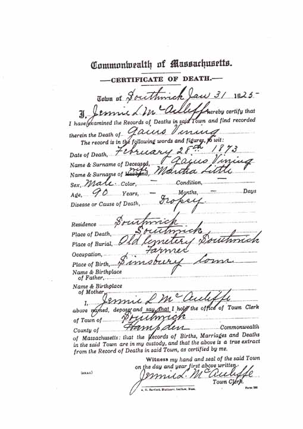
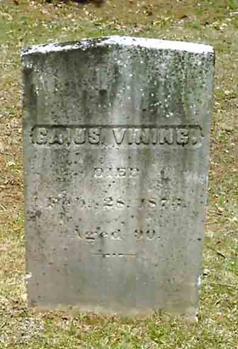

Census Data
| 1820 | 1830 | 1840 | 1850 | 1860 | 1870 | 1880 | |
| Gaius Vining | M 26–45 | ? | M 40–50 | 62 | 75 | 86 [see note below] |
dead |
| Martha (Little) Vining | F 26–45 | ? | F 50–60 | 64 | 75 | 88 [see note below] |
dead |
| Henry Edward Vining | [see note below] | ? | [see note below] | 35 | 45 | 58 [see note below] |
? |
| Samuel Little Vining | [see note below] | ? | [see note below] | [living? in separate household] | |||
| John Andrew Vining | dead | ||||||
| Martha Amelia Vining | dead | ||||||
| Moses Andrew Vining | ? | M 15–20 | 27 | [living? in separate household] | |||
| Gaius Hobart Vining | ? | M 15–20 | [living? in separate household] | ||||
| William Norton Vining | ? | M 10–15 | 23 | 32 [see note below] |
married and living in separate(?) household [see note below] |


Death Data
Death certificate for Gaius Vining:
